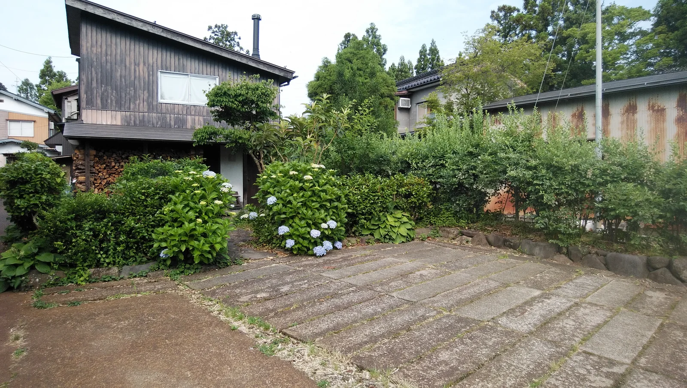
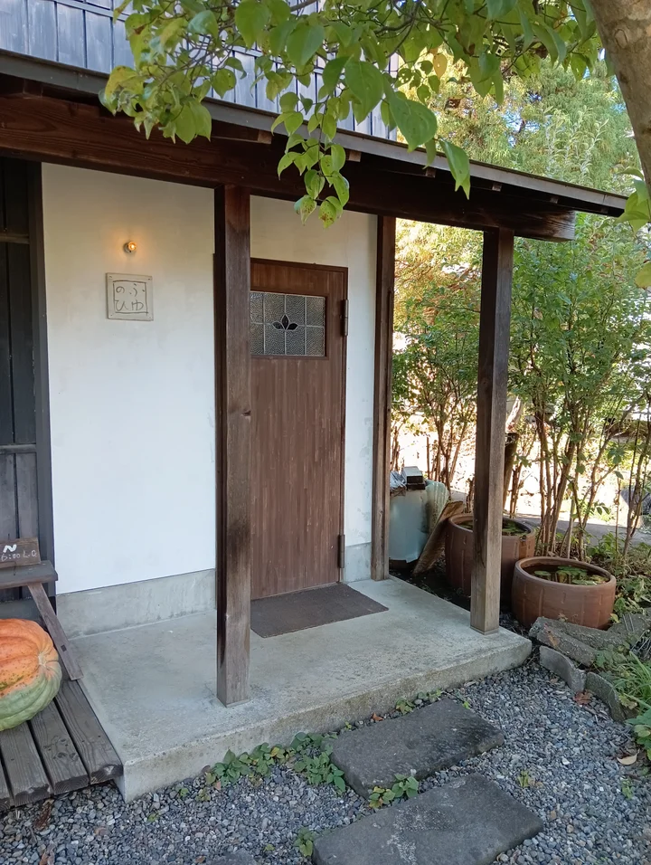

04 店舗情報・ご予約
冬の日へ、お出かけの前に。
営業日を確かめて、季節の食卓へ。
お食事のご予約、ご相談はお電話で承ります。
営業時間
火曜〜土曜は、昼食と喫茶を。
日曜・月曜と夕食は、
ご予約で営業します。
- 昼食
- 12:00〜14:00ラストオーダー
- 喫茶
- 14:00〜16:00ラストオーダー
- 夕食
- 17:30〜ご予約のみ
- 夜喫茶
- 18:30〜20:00ラストオーダー
3〜11月の第2・第4金曜日
ご予約の場合は、上記以外のお時間もご相談いただけます。
営業カレンダー
臨時休業・イベントなど、最新の予定をご確認ください。
ご予約・お問い合わせは、お電話で承ります。
冬の日の予定Google Calendar
店舗情報・地図
上越の、この場所で。

Farmer’s table
冬の日
〒943-0142
新潟県上越市下新町1057-2
- アクセス
- 上越ICより車で約10分
- 通常営業
- 火曜日〜土曜日
- ご予約営業
- 日曜日・月曜日／夕食
駐車場が手狭のため、できるだけ乗り合わせでお越しください。複数台の場合は、縦列駐車をお願いすることがございます。

ご予約・お問い合わせ
お電話、お待ちしています。
お食事のご予約、お弁当や野菜販売のご相談も、
どうぞお気軽にお電話ください。